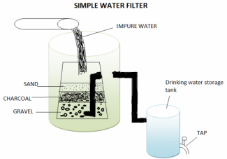

Water Filter
A. An ingenious invention is set to bring clean water to the third world, and while the science may be cutting edge, the materials are extremely down to earth. A handful of clay yesterday’s coffee grounds and some cow manure are the ingredients that could bring clean, safe drinking water to much of the third world.
B. The simple new technology, developed by ANU materials scientist Mr. Tony Flynn, allows water filters to be made from commonly available materials and fired on the ground using cow manure as the source of heat, without the need for a kiln. The filters have been tested and shown to remove common pathogens (disease-producing organisms) including E-coli. Unlike other water filtering devices, the filters are simple and inexpensive to make. “They are very simple to explain and demonstrate and can be made by anyone, anywhere,” says Mr. Flynn. “They don’t require any western technology. All you need is terracotta clay, a compliant cow and a match.”
C. The production of the filters is extremely simple. Take a handful of dry, crushed clay, mix it with a handful of organic material, such as used tea leaves, coffee grounds or rice hulls, add enough water to make a stiff biscuit-like mixture and form a cylindrical pot that has one end closed, then dry it in the sun. According to Mr. Flynn, used coffee grounds have given the best results to date. Next, surround the pots with straw; put them in a mound of cow manure, light the straw and then top up the burning manure as required. In less than 60 minutes the filters are finished. The walls of the finished pot should be about as thick as an adult’s index. The properties of cow manure are vital as the fuel can reach a temperature of 700 degrees in half an hour and will be up to 950 degrees after another 20 to 30 minutes. The manure makes a good fuel because it is very high in organic material that bums readily and quickly; the manure has to be dry and is best used exactly as found in the field, there is no need to break it up or process it any further.
D. “A potter’s din is an expensive item and can could take up to four or five hours to get upto 800 degrees. It needs expensive or scarce fuel, such as gas or wood to heat it and experience to run it. With no technology, no insulation and nothing other than a pile of cow manure and a match, none of these restrictions apply,” Mr. Flynn says.
E. It is also helpful that, like terracotta clay and organic material, cow dung is freely available across the developing world. “A cow is a natural fuel factory. My understanding is that cow dung as a fuel would be pretty much the same wherever you would find it.” Just as using manure as a fuel for domestic uses is not a new idea, the porosity of clay is something that potters have known about for years, and something that as a former ceramics lecturer in the ANU School of Art, Mr. Flynn is well aware of. The difference is that rather than viewing the porous nature of the material as a problem — after all not many people want a pot that won’t hold water — his filters capitalize on this property.
F. Other commercial ceramic filters do exist, but, even if available, with prices starting at US$5 each, they are often outside the budgets of most people in the developing world. The filtration process is simple, but effective. The basic principle is that there are passages through the filter that are wide enough for water droplets to pass through, but too narrow for pathogens. Tests with the deadly E-coli bacterium have seen the filters remove 96.4 to 99.8 per cent of the pathogen — well within safe levels. Using only one filter it takes two hours to filter a litre of water. The use of organic material, which burns away after firing, helps produce the structure in which pathogens will become trapped. It overcomes the potential problems of finer clays that may not let water through and also means that cracks are soon halted. And like clay and cow dung, it is universally available.
G. The invention was born out of a World Vision project involving the Manatuto community in East Timor The charity wanted to help set up a small industry manufacturing water filters, but initial research found the local clay to be too fine — a problem solved by the addition of organic material. While the AF problems of producing a working ceramic filter in East Timor were overcome, the solution was kiln-based and particular to that community’s materials and couldn’t be applied elsewhere. Manure firing, with no requirement for a kiln, has made this zero technology approach available anywhere it is needed. With all the components being widely available, Mr. Flynn says there is no reason the technology couldn’t be applied throughout the developing world, and with no plans to patent his idea, there will be no legal obstacles to it being adopted in any community that needs it. “Everyone has a right to clean water, these filters have the potential to enable anyone in the world to drink water safely,” says Mr. Flynn.
Questions 1-6
Complete the flow chart, using NO MORE THAN TWO WORDS from the Reading Passage for each answer.
Write your answers in boxes 1-6 on your answer sheet.
Guide to Making Water Filters
Step one: combination of 1 and organic material, with sufficient 2 to create a thick mixture sun dried.
Step two: pack 3 around the cylinders place them in 4 which is as burning fuel for firing (maximum temperature: 5 ) filter being baked in under 6
Questions 7-10
Do the following statements agree with the information given in Reading Passage ?
In boxes 7-10 on your answer sheet, write
TRUE if the statement is true
FALSE if the statement is false
NOT GIVEN if the information is not given in the passage
7 It takes half an hour for the manure to reach 950 degrees
8 Clay was initially found to be unsuitable for pot making
9 Coffee grounds are twice as effective as other materials
10 E-coli is the most difficult bacteria to combat
Questions 11-13
Choose the correct letter, A, B, C or D.
Write your answers in boxes 11-13 on your answer sheet.
11. When making the pot, the thickness of the wall
A is large enough to let the pathogens to pass.
B varied according to the temperature of the fuel,
C should be the same as an adult’s forefinger.
D is not mentioned by Mr. Flynn.
12. What is true about the charity, it
A failed in searching the appropriate materials.
B successfully manufacture a kiln based ceramic filter to be sold worldwide
C found that the local clay are good enough.
D intended to help build a local filter production factory.
13. Mr. Flynn’s design is purposely not being patented
A because he hopes it can be freely used around the world
B because he doesn’t think the technology is perfect enough,
C because there are some legal obstacles.
D because the design has already been applied thoroughly.
---End of the Test---
Please Submit to view your score, solution and explanations.